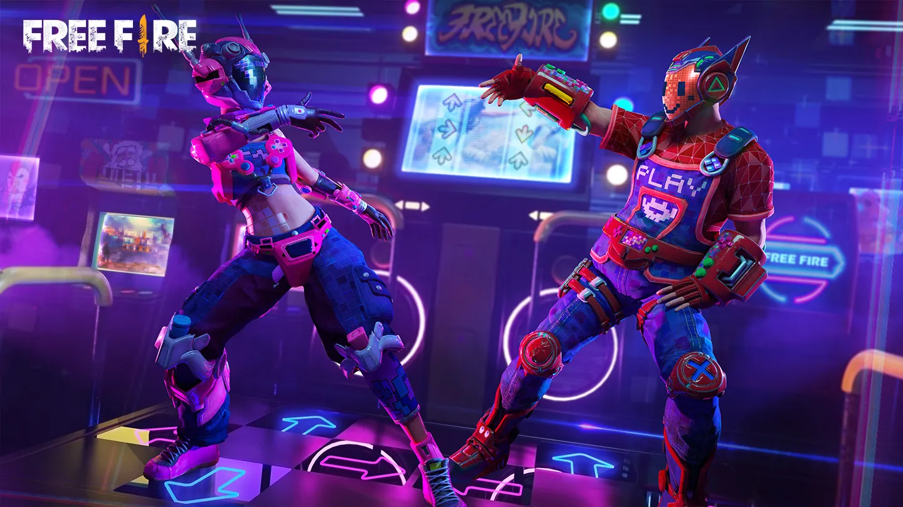
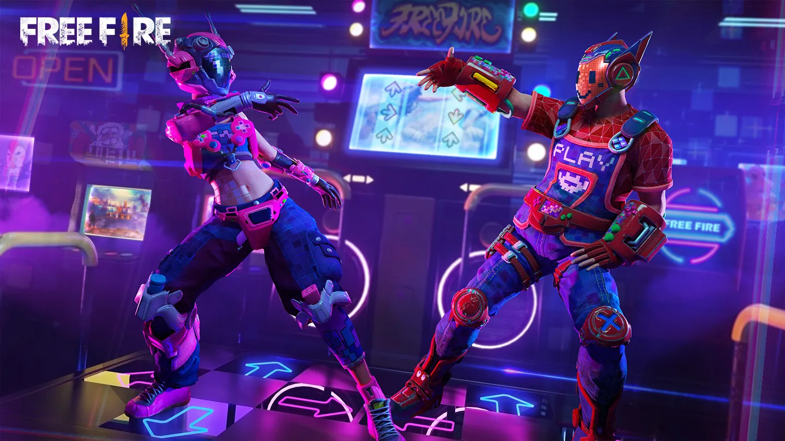

History of Free Fire
Free Fire, also known as Garena Free Fire, is a popular mobile battle royale game developed by 111 Dots
Studio and published by Garena. Since its release, it has become one of the most downloaded games globally,
especially popular in regions such as Southeast Asia, Latin America, and India. Here's a detailed history of
Free Fire, covering its development, major updates, and journey to success:
1. Origins and Concept (2017)
Publisher and Developer: Free Fire was published by Garena, a Singaporean digital services company founded by Forrest Li. The game's development was outsourced to 111 Dots Studio, a small Vietnamese game development studio.
Game Concept: The idea for Free Fire was inspired by the rise in popularity of battle royale games like PlayerUnknown’s Battlegrounds (PUBG). Garena sought to create a similar battle royale experience but specifically optimized for mobile users and low-spec devices to make it accessible across diverse markets.
2. Initial Release and Early Popularity (Late 2017)
Beta Release: Free Fire was first launched in a closed beta version in September 2017, targeting only a few regions to test the game’s compatibility and appeal on mobile devices.
Official Release: In December 2017, Garena officially released Free Fire for both Android and iOS platforms globally. Despite being a relatively low-budget game, Free Fire gained immediate traction due to its fast-paced gameplay and mobile optimization.
3. Gameplay Innovations
Unique Battle Royale Approach: Free Fire introduced 50-player battle royale matches with 10-minute gameplay sessions, faster and shorter than most other battle royale games at the time. This suited mobile gamers, offering intense experiences without the need for extended play sessions.
Character System: Unlike other battle royale games, Free Fire introduced a character system where players could choose from various characters with unique abilities. This RPG-like element added depth to the gameplay, allowing players to customize their strategies based on the characters they chose.
Device Compatibility: Free Fire was optimized to run smoothly on low-end devices, making it accessible to a broader audience in countries where high-end smartphones were less common.
4. Global Success and Expanding Player Base (2018-2019)
User Growth: Free Fire continued to grow, especially in Southeast Asia, India, and Latin America, quickly amassing millions of players. Its success can be attributed to Garena’s marketing strategy and focus on creating a game that worked well on a range of devices.
Awards and Recognition: In 2018, Free Fire was recognized as the most downloaded mobile game globally on the Google Play Store. It also received the Google Play “Best Popular Vote Game” award in the same year.
In-Game Events and Collaborations: Garena introduced various themed events, including collaborations with celebrities and pop culture icons, which boosted the game's popularity. For example, collaborations with DJ Alok, KSHMR, and sports leagues brought in new players and kept existing players engaged.
5. Major Updates and Features (2020-2021)
Free Fire Max: In 2021, Garena released Free Fire Max, a higher-definition version of the original game designed for players with more powerful devices. Free Fire Max featured enhanced graphics, smoother animations, and more immersive sound effects while keeping the same core gameplay.
In-Game Economy and Customization: Free Fire’s in-game economy saw significant improvements, with more options for character skins, weapon upgrades, and cosmetic items. The character customization and in-game items offered players a personalized experience.
Events and Content Expansion: Garena continued adding special events, characters, and game modes. Events like BOOYAH Day, themed seasons, and crossover events with major pop culture franchises helped Free Fire stay fresh and engaging for players.
6. Free Fire in Esports
Competitive Tournaments: Free Fire has grown into a significant player in the mobile esports arena. Garena organized numerous tournaments, including the Free Fire World Series (FFWS), which brought together players from around the world to compete. The FFWS set records with millions of viewers tuning in to watch the events.
Regional Leagues: Garena established regional leagues in Latin America, Southeast Asia, and India, among others. This allowed local players to compete and qualify for global tournaments, further cementing Free Fire’s popularity and reach in these regions.
7. Challenges and Market Shifts (2022)
Ban in India: In February 2022, the Indian government banned Free Fire, along with other apps associated with Chinese investment, citing security concerns. This was a major setback, as India was one of Free Fire’s largest markets.
Global Expansion: Garena focused on expanding its user base in other markets by ramping up marketing efforts and emphasizing Free Fire Max. The company continued to support its player base in other regions by releasing new content, hosting events, and offering game optimizations.
8. Technological and Gameplay Enhancements
New Characters and Abilities: Garena regularly added new characters, each with unique skills, creating fresh strategies and team dynamics. Some characters, like DJ Alok and KSHMR, were developed in partnership with real-life personalities, making Free Fire one of the few games to collaborate with pop culture icons.
Improved Graphics and Gameplay Mechanics: Free Fire Max allowed Garena to showcase the game in higher fidelity, creating an enhanced experience that attracted players with high-spec devices while maintaining the original Free Fire for low-spec devices.
9. Community and Cultural Impact
Fanbase and Community Engagement: Free Fire has an active and passionate community of players and content creators on platforms like YouTube and Twitch. Many players worldwide have become dedicated influencers, creating content and sharing gameplay tips, strategies, and highlights, helping to grow the game’s fanbase.
Cultural Events and Custom Content: Garena has leveraged local and global events to keep players engaged, including holiday events, seasonal rewards, and region-specific content. Free Fire has become more than a game for many; it’s a cultural phenomenon in places where it resonates deeply with players.
10. Free Fire Today and Future Prospects
Ongoing Content Updates: Garena continues to add new content regularly, including characters, pets, and items, to retain and grow the player base. The addition of frequent updates, game modes, and events has helped Free Fire sustain its large community.
Growth in New Markets: With the game’s ban in India, Garena has refocused its efforts on markets in Latin America, Southeast Asia, and regions where the player base remains strong.
Future Development: As Free Fire evolves, Garena is expected to further integrate user feedback, improve game mechanics, and enhance graphics to stay competitive in the mobile gaming market. Free Fire Max will likely continue to grow in prominence, particularly in regions where higher-spec devices are more common.
Key Takeaways
Garena Free Fire’s success is due to its focus on accessibility, high engagement through events and collaborations, and a strategic approach to mobile gaming in emerging markets. As one of the most popular battle royale games worldwide, Free Fire continues to push boundaries in the mobile gaming and esports space, demonstrating that accessibility and community engagement can be just as powerful as technological sophistication.


 
